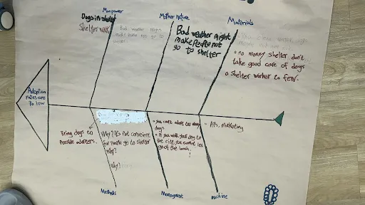

Lucas Teichert
Lucas Teichert
Lucas Research
Learning how to do fishbone
We learned how to break down a big problem to the smallest action points and learned how to use the fishbone.
Fishbone and 5why

After looking at our Fishbone diagram, we decided to focus on how people can meet and interact with shelter dogs more easily. We used the 5 Whys to arrive at the smallest actionable point.
Why are adoption rates too low? Because many people do not adopt shelter dogs.
Why do many people not adopt shelter dogs? Because they do not know the dogs well enough.
Why do they not know the dogs well enough? Because they do not have many chances to meet and interact with them.
Why do they not have many chances to meet and interact with them? Because the shelter is not easy for everyone to visit often.
Why is this a problem? Because people need a safe and convenient place to meet dogs before they feel ready to adopt. Our smallest actionable point was to create safe and convenient ways for people to meet shelter dogs before adoption. This could include dog cafés, school events, or park events.
Original Survey design
Orginal survey question
Q1 : Have you ever been to a place where people can meet dogs, such as a shelter, farm, zoo, or pet cafe? Yes / No
Q2 : Which places do you think are best for helping dogs in need of adoption get noticed? Choose TWO answers. ● More school activities ● More public events with animals ● More places for shelter dogs to visit ● More visits to places like children’s centres, prisons, or elderly care homes ● More dog cafes and restaurants ● Partnerships with shops where people can meet and play with dogs ● More dogs visiting public places ● Other: __________
Q3 : What is the best way for people to get to that place? ● Drive myself ● Public transport ● Bike ● Walking ● Taxi ● Pick-up service ● Other: __________
Q4 : Would you be more interested if you could see the dog in person? ● Yes ● No ● Maybe
Q5 : Which kind of place would make you most willing to meet a dog? Choose one answer. ● A school activity ● A public event ● A dog cafe or restaurant ● A public place ● A shelter activity area ● Other: __________
Q6 : Open question: What do you think is the best way to help dogs get closer to people?
Talk with DAAN students
We were doing a test run survey by asking DAAN students